EE564 - Design of Electrical Machines
Contents
- Project-3: Verification of the Traction Motor Design via FEM Analysis
- Name: Mesut Uğur
- ID: 1626753
- INTRODUCTION
- PROJECT SPECIFICATIONS AND DESIGN INPUTS
- MAIN MACHINE DIMENSIONS
- STATOR PARAMETERS
- NOTE
- ROTOR PARAMETERS
- NOTE
- CONDUCTORS
- STATOR SLOT DESIGN
- NOTE
- ROTOR SLOT DESIGN
- MMF VALUES
- EQUIVALENT CIRCUIT PAREMETERS
- MATERIAL MASS
- LOSSES AND EFFICIENCY
- EQUIVALENT CIRCUIT
- TORQUE-SPEED CHARACTERISTICS
- MAXWELL RMXPRT DESIGN
- MAXWELL RMXPRT RESULTS
- MAXWELL RMXPRT RESULTS-DISCUSSION
- MAXWELL 2D MAGNETOSTATIC DESIGN
- MAXWELL 2D MAGNETOSTATIC SOLUTION-1
- MAXWELL 2D MAGNETOSTATIC SOLUTION-2
- MAXWELL 2D MAGNETOSTATIC SOLUTION-3
- EVALUATION OF THE DESIGN THROUGH MAXWELL 2D FEMM RESULTS
Project-3: Verification of the Traction Motor Design via FEM Analysis
Name: Mesut Uğur
ID: 1626753
INTRODUCTION
In this project, we are asked to validate our traction motor design which was carried out in the 2nd project by using Finite Element Method tools such as Maxwell. The project that I worked on was the squirrel cage asynchronous traction motor to be used on a high power locomotive traction application.
At first, the design is applied to Maxwell RMxprt as it is, to get the performance of the design. The obtained machine parameters and performance metrics are compared with the ones computed during the 2nd project and the discrepancies are discussed. Moreover, the accuracy of the design is evaluated through RMxprt by considering the project specifications and initial design aims such as efficiency etc. Several improvements are applied to get a better performance in RMxprt and their theoretical background is also discussed.
Next, the finalised design is exported to Maxwell 2D FEM environment through which detailed machine performance is obtained at steady state with Magnetostatic solution such as flux lines, magnetic flux density distribution, electrical current distribution etc.
A discussion on the machine staedy state physical performance is also performed. The design is evaluated with its successful sides and failed sides. Some suggestions are proposed to further enhance the magnetostatic performance of the machine.
This report is composed of the following sections:
- Project specifications and design inputs
- Design in 2nd project
- Main dimensions
- Calculated main machine parameters
- Calculated stator parameters
- Calculated rotor parameters
- Calculated stator and rotor slot parameters
- Calculated equivalent circuit parameters
- Calculated losses and efficiency
- Torque-speed characteristics
- Calculated basic parameters
- RMxprt inputs of the design
- RMxprt results of the design
- Discussion on the results obtained in RMxprt
- Magnetostatic inputs of the design
- Magnetostatic results of the design
- Discussion on the results obtained in Magnetostatic
PROJECT SPECIFICATIONS AND DESIGN INPUTS
Rated Power Output: 1280 kW
Line-to-line voltage: 1350 V
Number of poles: 6
Rated Speed: 1520 rpm (72 km/h) (driven with 78 Hz inverter)
Rated Motor Torque: 7843 Nm
Cooling: Forced Air Cooling
Insulating Class: 200
Train Wheel Diameter: 1210 mm
Maximum Speed: 140 km/h
Gear Ratio: 4.821
Duty: Continuous running duty (S1)
Efficiency: IE3, premium efficiency: 96 %
Power factor: 0.87
Average winding temp rise: 130 degree C
Hot spot temp rise: 160 degree C
Maximum winding temp: 200 degree C
Rated phase voltage: 779 V
Synchronous speed: 1560 rpm ()
Rated torque: 8 kNm
Rated phase current: 660 A
MAIN MACHINE DIMENSIONS
Inner diameter = 0.6 m
Outer diameter = 1.12 m
Length = 0.45 m
Air gap distance = 3 mm
Inner surface area = 0.84823 m^2
Inner volume = 0.127235 m^3
Inner circumference = 1.88496 m
The resultant tangential stress = 31.5376 kPa
The resultant specific machine constant = 303.894 kWs/m^3
The resultant magnetic loading = 0.9 Tesla
The resultant electrical loading = 35.0418 kA/m
STATOR PARAMETERS
Selected slot/pole/phase (qs) is 5
Selected stator slot number (Qs) is 90
The resultant stator slot pitch (Tus) is 20.944 mm
Selected stator layer is 2
Pitch angle of stator is 144 degrees electrical
Slot angle of stator is 12 degrees electrical
Selected air gap flux density is 0.9 Tesla
Selected stator back iron (yoke) flux density is 1.6 Tesla
Selected stator teeth flux density is 1.9 Tesla
Selected rotor back iron (yoke) flux density is 1.6 Tesla
Selected rotor teeth flux density is 2 Tesla
Distribution factor for the fundamental component is 0.956677
Pitch factor for the fundamental component is 0.951057
winding factor for the fundamental component is 0.909854
The selected turn number per phase (Nph) is 30
The resultant turn number per coil side (zQ) is 1
The resultant flux per pole is 0.0824523 Weber
Resultant induced voltage is 779.423 Volts rms
The peak current is 932.835 Amps
The peak MMF is 8104.91 Amps
NOTE
In the 2nd project, I changed the air gap distance from 3 mm to 10 mm based on a wrong assumption such that, all the MMF produced by the satator should drop on the air gap. That kind of a design would yield a magnetizing current almost the same as the input current. Therefore, I will stick with the first 3 mm design from now on.
ROTOR PARAMETERS
Selected rotor slot number is 72.
NOTE
This selection was based on a false idea such that the squirrel cage rotor slot (bar) number should be a multiplication of both phase number pole number. I realised that this was wrong and I will update the rotor bar number selection on RMxprt analysis.
CONDUCTORS
Copper is selected for stator
Selected wire is AWG Gauge 0.
Wire diameter is 8.25246 mm and area is 53.488 mm^2.
2 strands of wires will be used in parallel.
The resultant current density is 6.16599 A/mm^2
Wire diameter with insulation is 8.41751 mm and area is 55.649 mm^2.
Total wire area (one turn) is 111.298 mm^2.
Aluminium is selected for rotor
STATOR SLOT DESIGN
Selected stator slot fill factor is 0.44
Useful slot area of the stator is 505.9 mm^2
I = imread('stator_slot.png'); figure; imshow(I); title('Stator Slot Shape and Dimensions','FontSize',18,'FontWeight','Bold');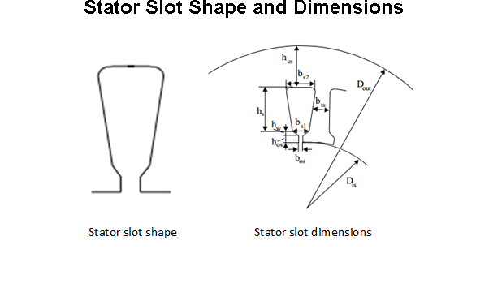
Stator slot pitch (Tus) is 20.944 mm
Stator stacking factor (Kfe) is 0.96 mm
Stator slot tooth width (bts) is 10.2701 mm
Stator slot opening width (bos) is 4 mm
Stator slot opening height (hos) is 2 mm
The bottom stator slot width (bs1) is 11.0229 mm
The top stator slot width (bs2) is 13.8626 mm
The useful stator slot height (hs) is 40.6582 mm
The height of stator back iron is (hcs) is 214.342 mm
The resultant stator back iron flux density is 0.418127 Tesla.
The aimed stator back iron flux density is 1.45 Tesla.
The new back iron height is 63.1818 mm.
The new outer diameter is 0.81768 m.
NOTE
The previous stator outer diameter value was 1.12 m and the new value is 0.82 m neither of which may not be an optimum value. It will be adjusted on RMxprt design.
ROTOR SLOT DESIGN
I = imread('rotor_slot.png'); figure; imshow(I); title('Rotor Slot Shape and Dimensions','FontSize',18,'FontWeight','Bold');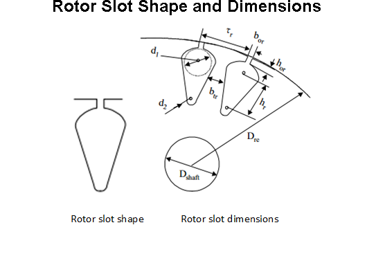
Rotor slot pitch (Tur) is 25.9181 mm
Rotor stacking factor (Kfe) is 0.96
Rotor slot tooth width (btr) is 12.0738 mm
Rotor slot opening width (bor) is 4 mm
Rotor slot opening height (hor) is 2 mm
Rotor bar current is 1332.34 A.
Rotor bar current density is 6 A/mm^2.
Rotor bar slot area is 222.056 mm^2.
Rotor end ring current is 7643.43 A.
Rotor end ring current density is 4.68 A/mm^2.
Rotor end ring area is 1633.21 mm^2.
Rotor bar top diameter (d1) is 13.0983 mm.
Rotor bar bottom diameter (d2) 3 mm.
Rotor bar height (hr) 115.645 mm.
Rotor slot area is 1001.75 mm^2.
The height of the rotor back iron (hcr) is 57.2585 mm.
A shaft diameter of 150 mm is selected.
MMF VALUES
The peak MMF of the teeth is 694.918 A.
The peak MMF of the yoke is 527.281 A.
The peak MMF of the teeth is 1913.06 A.
The peak MMF of the yoke is 140.856 A.
EQUIVALENT CIRCUIT PAREMETERS
The magnetizing inductance of the machine is 14.5636 mH.
The magnetizing reactance at fundamental frequency is 7.13744 Ohms.
The magnetizing current is 109.202 A.
The stator leakage inductance of the machine is 86.0795 uH.
The stator leakage reactance at fundamental frequency is 42.1866 mOhms.
The rotor leakage inductance referred to the stator is 434.671 uH.
The rotor leakage reactance referred to the stator is 213.027 mOhms.
The DC resiatance of the stator phase winding is 10.5067 mOhms.
The AC resiatance of the stator phase winding is 10.5067 mOhms.
The resiatance of the rotor phase winding is 33.2912 uOhms.
The rotor resistance referred to the stator is 4.13394 mOhms.
The core loss resistance is 91.4499 Ohms.
MATERIAL MASS
Total copper volume is 0.0166135 m^3.
Total copper mass is 148.857 kg.
Total aluminium volume is 0.0331031 m^3.
Total aluminium mass is 89.3784 kg.
Stator teeth iron mass is 142.205 kg.
Stator back iron mass is 1368.98 kg.
Stator total iron mass is 1511.18 kg.
Rotor teeth iron mass is 362.328 kg.
Total mass is 2111.74 kg.
LOSSES AND EFFICIENCY
Total stator copper loss is 13714.2 Watts.
Total rotor copper loss is 5395.91 Watts.
Total copper loss is 19110.1 Watts.
stator core loss only at fundamental frequency is 19929 Watts.
Total loss of the machine is 49279 Watts.
Efficiency of the machine is 96.2928 %.
EQUIVALENT CIRCUIT
I = imread('eqv_circ.png'); figure; imshow(I); title('Equivalent Circuit of the Machine','FontSize',18,'FontWeight','Bold');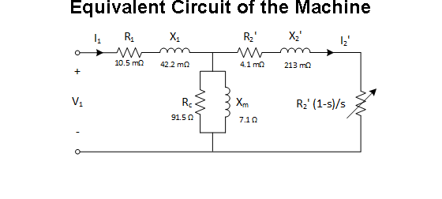
TORQUE-SPEED CHARACTERISTICS
I = imread('TORQUE-SPEED.png'); figure; imshow(I); title('Torque-speed Characteristics of the Machine','FontSize',18,'FontWeight','Bold');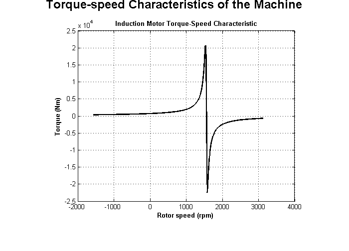
The rated slip is 0.025641.
The starting torque is 6.986622e+02 Nm.
The maximum torque is 2.075056e+04 Nm.
The slip at maximum torque is 1.600000e-02.
MAXWELL RMXPRT DESIGN
I = imread('rmxprtin1.png'); figure; imshow(I); title('Main Machine Dimensions in RMXPRT','FontSize',18,'FontWeight','Bold'); I = imread('rmxprtin2.png'); figure; imshow(I); title('Stator Dimensions in RMXPRT','FontSize',18,'FontWeight','Bold'); I = imread('rmxprtin3.png'); figure; imshow(I); title('Stator Slot in RMXPRT','FontSize',18,'FontWeight','Bold'); I = imread('rmxprtin4.png'); figure; imshow(I); title('Stator Slot Dimensions in RMXPRT','FontSize',18,'FontWeight','Bold'); I = imread('rmxprtin5.png'); figure; imshow(I); title('Stator Winding Design in RMXPRT','FontSize',18,'FontWeight','Bold'); I = imread('rmxprtin6.png'); figure; imshow(I); title('Rotor Dimensions in RMXPRT','FontSize',18,'FontWeight','Bold'); I = imread('rmxprtin7.png'); figure; imshow(I); title('Rotor Slot in RMXPRT','FontSize',18,'FontWeight','Bold'); I = imread('rmxprtin8.png'); figure; imshow(I); title('Rotor Slot Dimensions in RMXPRT','FontSize',18,'FontWeight','Bold'); I = imread('rmxprtin9.png'); figure; imshow(I); title('Rotor Winding Design in RMXPRT','FontSize',18,'FontWeight','Bold'); I = imread('rmxprtin10.png'); figure; imshow(I); title('Design Inputs-1 in RMXPRT','FontSize',18,'FontWeight','Bold'); I = imread('rmxprtin11.png'); figure; imshow(I); title('Design Inputs-2 in RMXPRT','FontSize',18,'FontWeight','Bold'); I = imread('rmxprtin12.png'); figure; imshow(I); title('Resultant Machine Geometry in RMXPRT','FontSize',18,'FontWeight','Bold'); I = imread('rmxprtin13.png'); figure; imshow(I); title('Resultant Rotor Geometry in RMXPRT','FontSize',18,'FontWeight','Bold'); I = imread('rmxprtin14.png'); figure; imshow(I); title('Resultant Stator Slot Geometry in RMXPRT','FontSize',18,'FontWeight','Bold'); I = imread('rmxprtin15.png'); figure; imshow(I); title('Resultant Rotor Slot Geometry in RMXPRT','FontSize',18,'FontWeight','Bold'); I = imread('rmxprtin16.png'); figure; imshow(I); title('Resultant Air Gap Geometry in RMXPRT','FontSize',18,'FontWeight','Bold'); I = imread('rmxprtin17.png'); figure; imshow(I); title('Resultant Winding Configuration in RMXPRT','FontSize',18,'FontWeight','Bold'); I = imread('rmxprtin18.png'); figure; imshow(I); title('Coil Pitch to Eliminate 5th Harmonic in RMXPRT','FontSize',18,'FontWeight','Bold');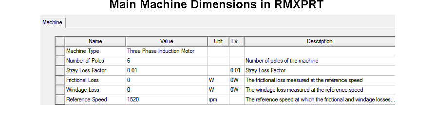 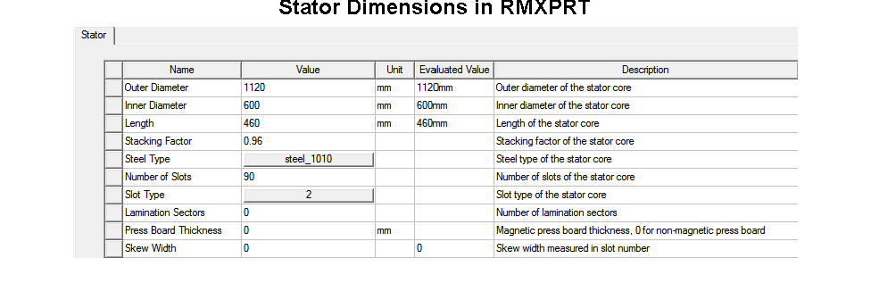 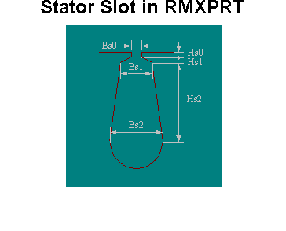 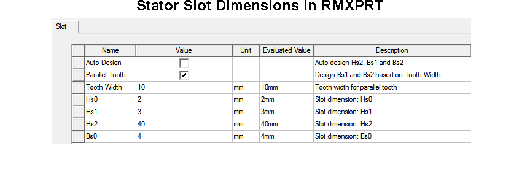 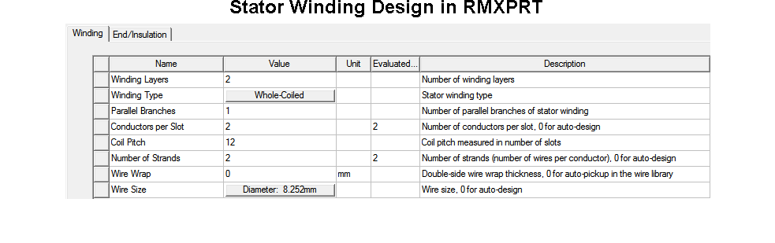 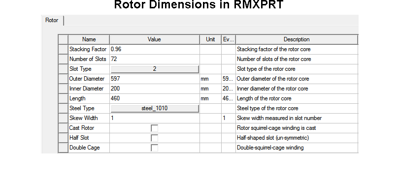 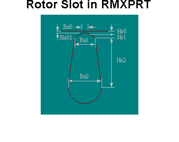 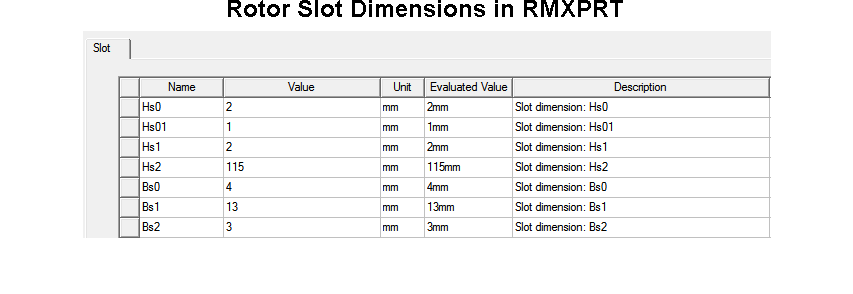 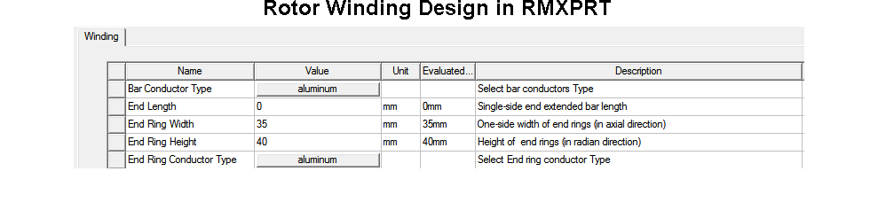 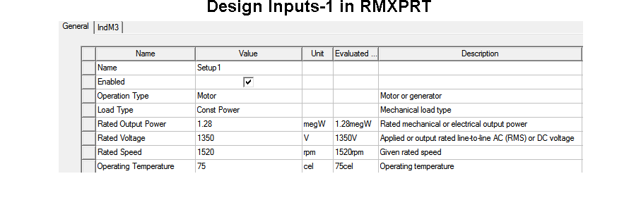 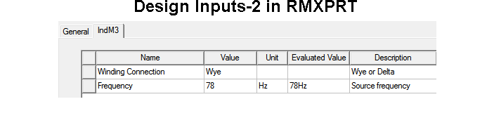 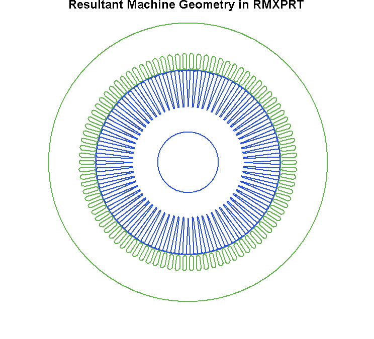 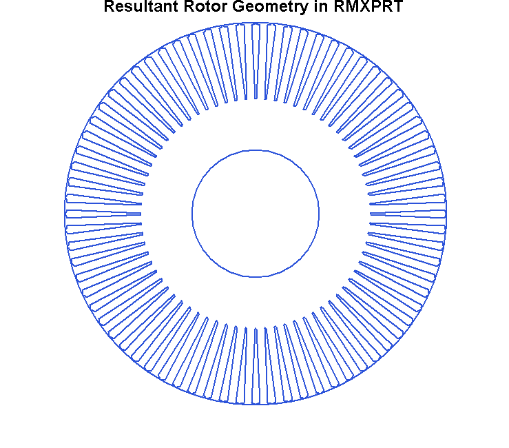 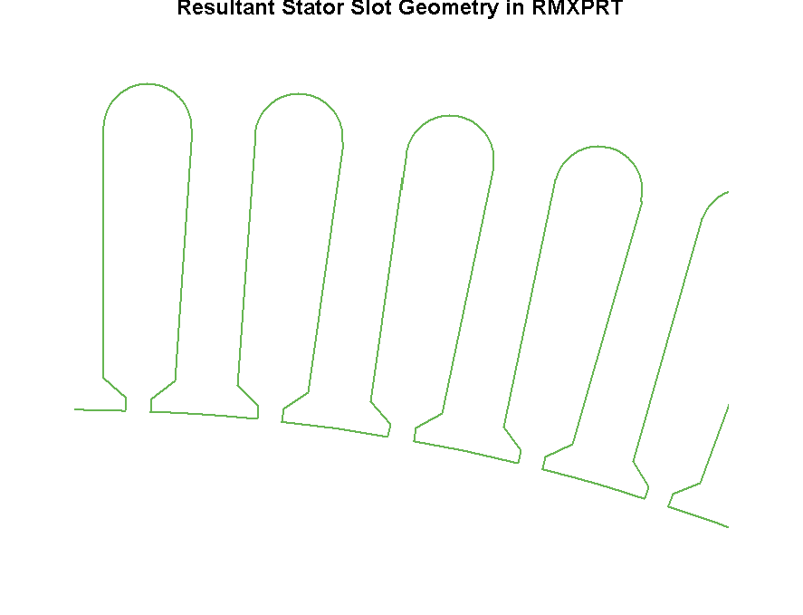 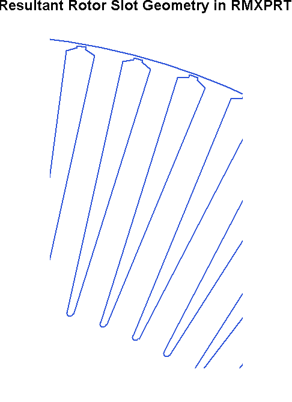 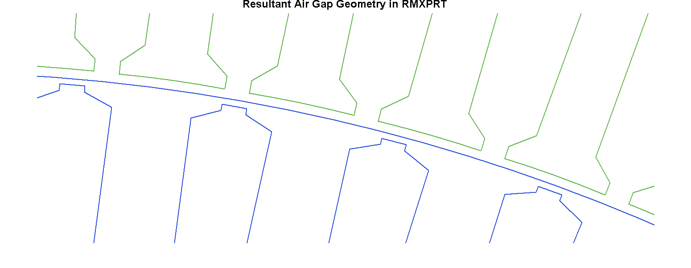 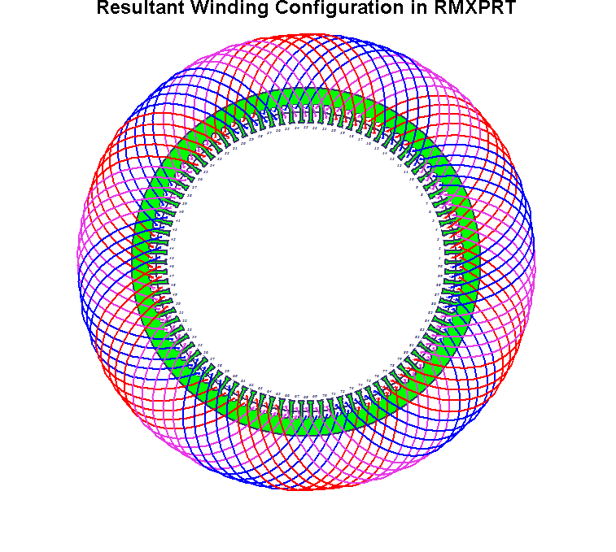 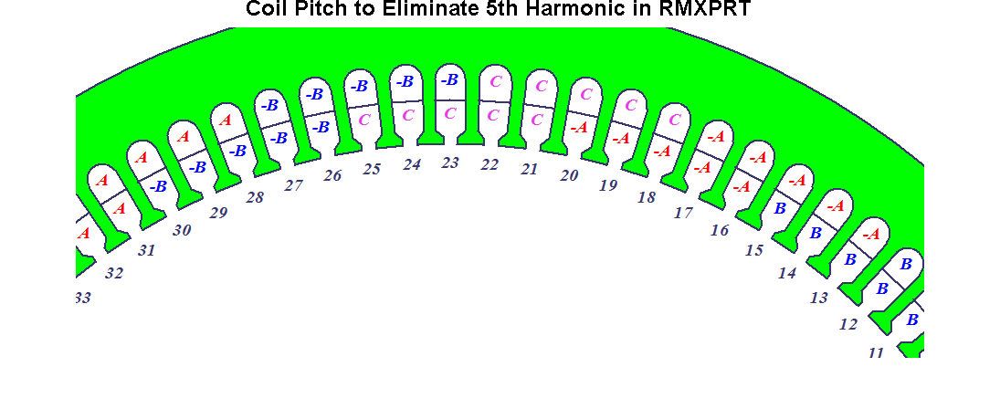
MAXWELL RMXPRT RESULTS
I = imread('rmxprtout1.png'); figure; imshow(I); title('Breakdown Operation','FontSize',18,'FontWeight','Bold'); I = imread('rmxprtout2.png'); figure; imshow(I); title('Locked Rotor Operation','FontSize',18,'FontWeight','Bold'); I = imread('rmxprtout3.png'); figure; imshow(I); title('Material Consumption','FontSize',18,'FontWeight','Bold'); I = imread('rmxprtout4.png'); figure; imshow(I); title('No Load Operation','FontSize',18,'FontWeight','Bold'); I = imread('rmxprtout5.png'); figure; imshow(I); title('Rated Electrical Data','FontSize',18,'FontWeight','Bold'); I = imread('rmxprtout6.png'); figure; imshow(I); title('Rated Magnetic Data','FontSize',18,'FontWeight','Bold'); I = imread('rmxprtout7.png'); figure; imshow(I); title('Rated Performance','FontSize',18,'FontWeight','Bold'); I = imread('rmxprtout8.png'); figure; imshow(I); title('Stator Winding Data','FontSize',18,'FontWeight','Bold'); I = imread('rmxprtout14.png'); figure; imshow(I); title('Rated Parameters','FontSize',18,'FontWeight','Bold'); I = imread('rmxprtout9.png'); figure; imshow(I); title('Torque vs Speed Curve','FontSize',18,'FontWeight','Bold'); I = imread('rmxprtout10.png'); figure; imshow(I); title('Power Factor vs Speed Curve','FontSize',18,'FontWeight','Bold'); I = imread('rmxprtout11.png'); figure; imshow(I); title('Output Power vs Speed Curve','FontSize',18,'FontWeight','Bold'); I = imread('rmxprtout12.png'); figure; imshow(I); title('Efficiency vs Speed Curve','FontSize',18,'FontWeight','Bold'); I = imread('rmxprtout13.png'); figure; imshow(I); title('Phase Current vs Speed Curve','FontSize',18,'FontWeight','Bold');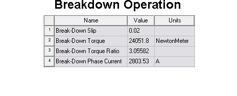 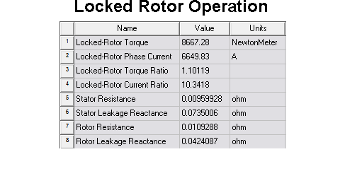 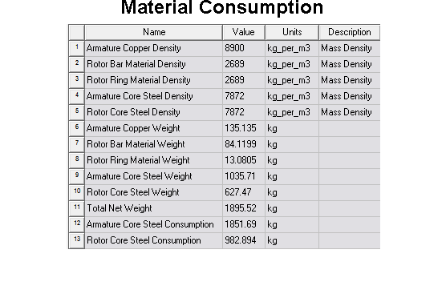 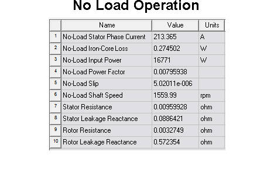 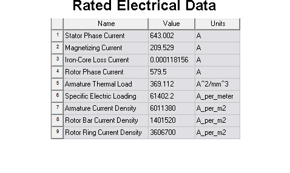 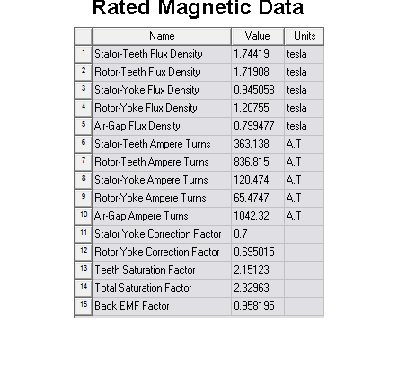 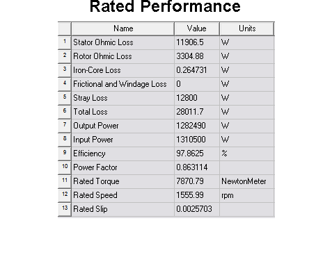 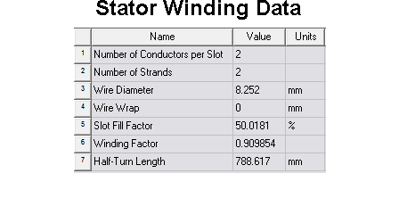 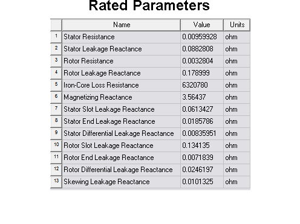 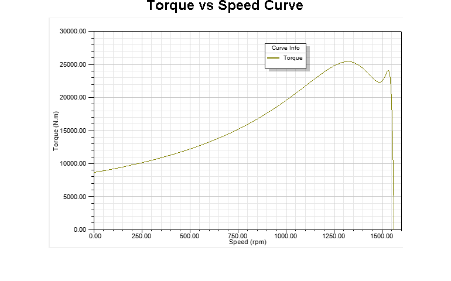 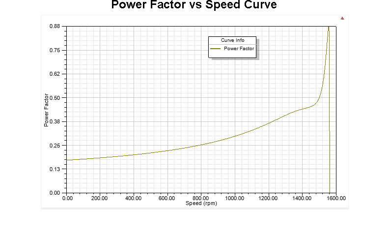 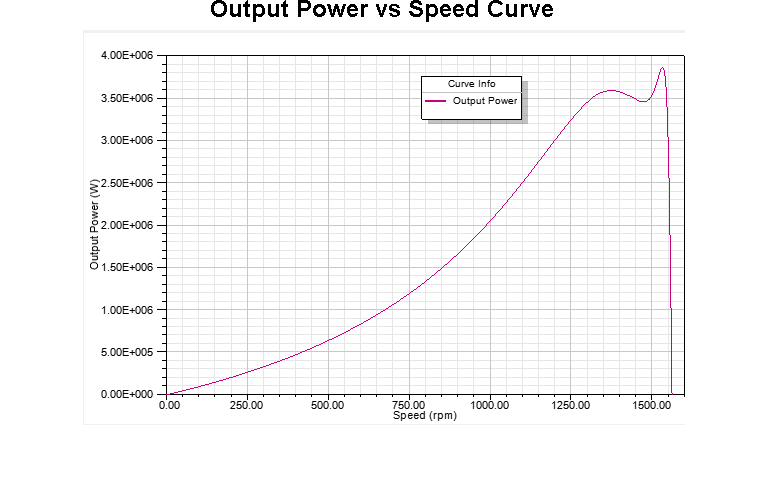 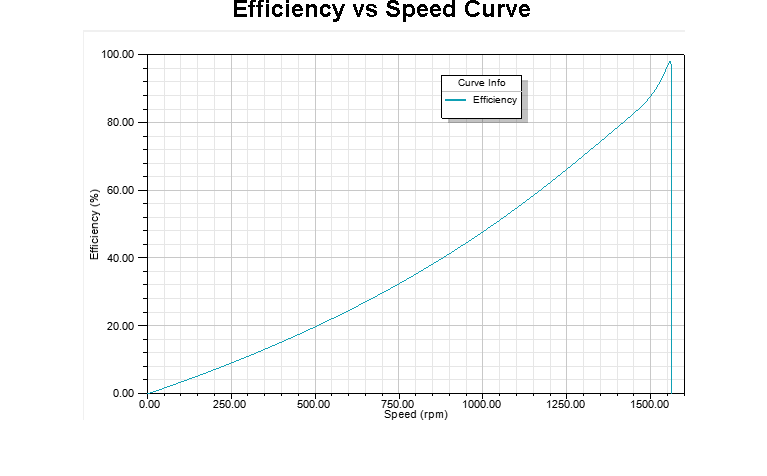 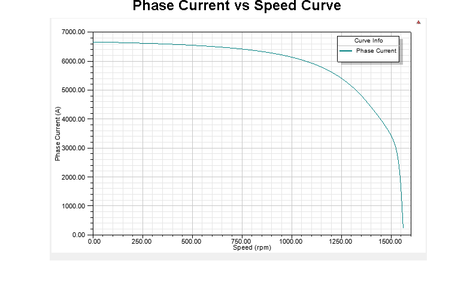
MAXWELL RMXPRT RESULTS-DISCUSSION
In this part, several parameters obtained on RMxprt will be compared with their calculated counterparts for design methodology (which was performed) on MATLAB for validation. This will be called as (1).
Moreover, the resultant parameters will be evaluated whether desired machine performance is obtained or not during this design procedure. This will be called as (2).
Breakdown performance
- Breakdown torque: OK (1)
- Breakdown torque: OK (2)
Material consumption
- Copper weight: OK (1)
- Aluminium weight: OK (1)
- Stator core weight: NOT OK (1): 2/3 of the calculated value
- Rotor core weight: OK (1)
- Total mass of the machine: OK (1)
- Net weight of the machine: OK (2)
Rated Electrical Data
- Stator phase current: OK (1)
- Magnetizing current: NOT OK (1): Nearly 1.7 times the calculated value
- Core loss: was not calculated by RMXprt (don't know why)
- Specific electric loading: NOT OK (1): Almost 1.7 times the calculated value.
- Stator current density: OK (1)
- Rotor current density: NOT OK (1): One quarter of the calculated value
- Magnetizing current: NOT OK (2): It is almost one third of the line current (relatively high)
- Specific electric loading: NOT OK (2): Too much for cooling
- Stator current density: OK (2)
- Rotor current density: OK (2)
Rated Magnetic Data
- Stator teeth flux density: OK (1) and (2)
- Stator yoke flux density: OK (1) and (2)
- Rotor teeth flux density: OK (1) and (2)
- Rotor yoke flux density: OK (1) and (2)
- Air gap flux density: OK (1) and (2)
All flux density values are both close to their calculated values and within desired ranges
- Stator teeth MMF: NOT OK (1): 1/2 times of the calculated value
- Stator yoke MMF: NOT OK (1): 1/4 times of the calculated value
- Rotor teeth MMF: NOT OK (1): 1/2 times of the calculated value
- Rotor yoke MMF: NOT OK (1): 1/2 times of the calculated value
Rated Performance
- Stator ohmic loss: OK (1):
- Rotor ohmic loss: NOT OK (1): 1.6 times lower
- Core loss: Was not calculated by RMXprt
- Total loss: OK (1) (except core loss)
- Efficiency: OK (1) (except core loss)
- Total loss: OK (2)
- Efficiency: OK (2)
- Power factor: OK (1) and (2)
- Rated torque: OK (1) and (2)
- Rated speed: NOT OK (1) and (2): Turned out very close to the synchronous speed. This was not expected.
Stator winding
- Fill factor: OK (1) and (2)
- Winding factor: OK (1) and (2)
Rated Parameters
- Magnetizing reactance: NOT OK (1) and (2): 2 times lower
- Stator leakage reactance: NOT OK (1), OK (2): 2 times higher
- Rotor leakage reactance: OK (1) and (2)
- Stator resiatance: OK (1) and (2)
- Rotor resiatance: OK (1) and (2)
- Core loss resistance: Was not calculated by RMXprt
Curves
- Torque-speed characteristics: NOT OK (1) and (2)
- Power factor-speed characteristics: NOT OK (2)
- Power-speed characteristics: NOT OK (2)
- Efficiency-speed characteristics: NOT OK (2)
- Phase current-speed characteristics: NOT OK (2)
The RMXprt results show that, most of the calculations were accurate. However, the magnetizing current and electrical loading were calculated much lower. Also, torque speed curve has not been estimated accurately.
The high magnetizing current is a problem for the design and must be revisited. The air gap distance may be decreased to overcome. The rated speed is very close to the synchronous speed which is a big problem. More importantly, the curves obtained against speed are not very promising. the torque-speed characteristics is acceptable at low speeds and close to rated point, however it has a bazaar shape at its breakdown region the reason of which was not detected. It may be due to the selection of number of rotor bars. The other curves also show that, the power factor varies significantly with speed, the efficiency drops significantly at middle and low speeds and phase current is very high at starting.
MAXWELL 2D MAGNETOSTATIC DESIGN
I = imread('2dsetup.png'); figure; imshow(I); title('Magnetostatic Solution Setup-1','FontSize',18,'FontWeight','Bold'); I = imread('2dsetup2.png'); figure; imshow(I); title('Magnetostatic Solution Setup-2','FontSize',18,'FontWeight','Bold'); I = imread('2dsetup3.png'); figure; imshow(I); title('Magnetostatic Solution Setup-3','FontSize',18,'FontWeight','Bold'); I = imread('pole_piece.png'); figure; imshow(I); title('Pole Piece To Be Solved in Magnetostatic','FontSize',18,'FontWeight','Bold'); I = imread('mesh.png'); figure; imshow(I); title('Mesh Generated by Magnetostatic','FontSize',18,'FontWeight','Bold');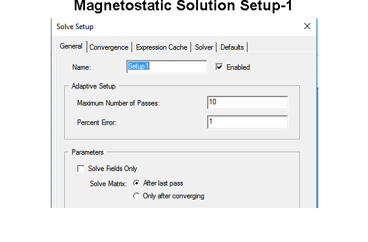
 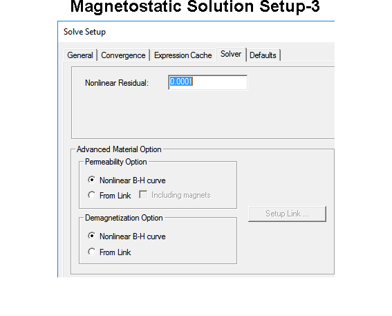
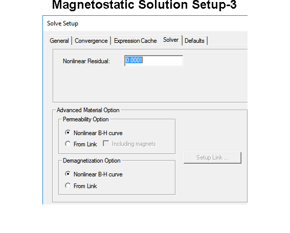  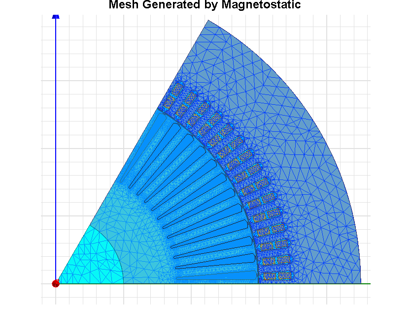
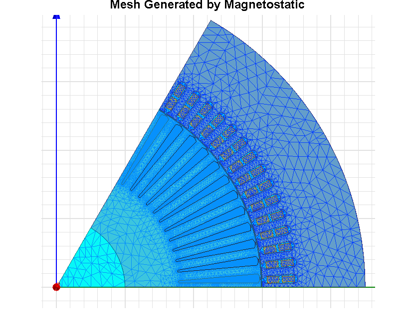 As known, magnetostatic solves several parameters of a machine for a given constant excitation at steady state which corresponds to a single point in time of an AC excitation. Therefore, in this analysis, three different time instants of a fundamental cycle at stady state will be considered.
SOLUTION-1: angle = 90 degrees, Phase-A = 920 A, Phase-B = -460 A, Phase-C = -460 A
SOLUTION-2: angle = 210 degrees, Phase-A = -460 A, Phase-B = 920 A, Phase-C = -460 A
SOLUTION-3: angle = 60 degrees, Phase-A = 700 A, Phase-B = -700 A, Phase-C = 0 A
MAXWELL 2D MAGNETOSTATIC SOLUTION-1
I = imread('airgapBrect1.png'); figure; imshow(I); title('Flux Density Variation Within the Air Gap','FontSize',18,'FontWeight','Bold'); I = imread('toothsBrect1.png'); figure; imshow(I); title('Flux Density Variation Within Stator Tooth','FontSize',18,'FontWeight','Bold'); I = imread('toothrBrect1.png'); figure; imshow(I); title('Flux Density Variation Within Rotor Tooth','FontSize',18,'FontWeight','Bold'); I = imread('yokesBrect1.png'); figure; imshow(I); title('Flux Density Variation Within Stator Back Iron','FontSize',18,'FontWeight','Bold'); I = imread('yokerBrect1.png'); figure; imshow(I); title('Flux Density Variation Within Rotor Back Iron','FontSize',18,'FontWeight','Bold'); I = imread('flux_lines1.png'); figure; imshow(I); title('Flux Lines Throughout the Pole Piece','FontSize',18,'FontWeight','Bold'); I = imread('flux_density1.png'); figure; imshow(I); title('Flux Density Distribution','FontSize',18,'FontWeight','Bold'); I = imread('flux_density21.png'); figure; imshow(I); title('Flux Density Near Air Gap and Teeth','FontSize',18,'FontWeight','Bold'); I = imread('intensity1.png'); figure; imshow(I); title('Magnetic Field Intensity Distribution','FontSize',18,'FontWeight','Bold'); I = imread('current_density1.png'); figure; imshow(I); title('Current Density Distribution','FontSize',18,'FontWeight','Bold'); I = imread('energy_density1.png'); figure; imshow(I); title('Energy Density Distribution','FontSize',18,'FontWeight','Bold'); I = imread('ohmic_loss1.png'); figure; imshow(I); title('Ohmic Loss Distribution','FontSize',18,'FontWeight','Bold');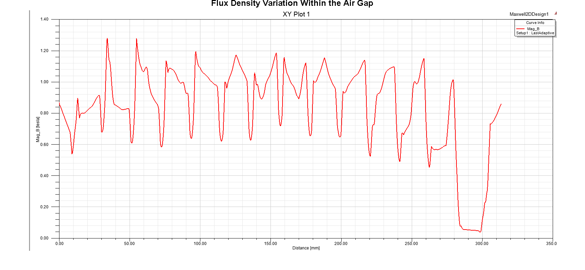 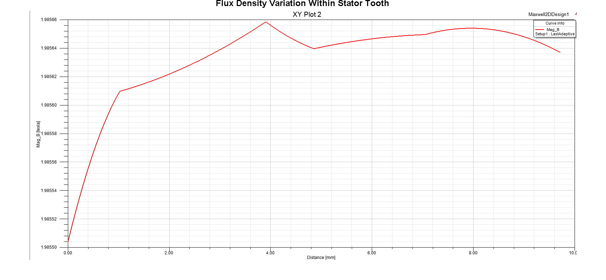 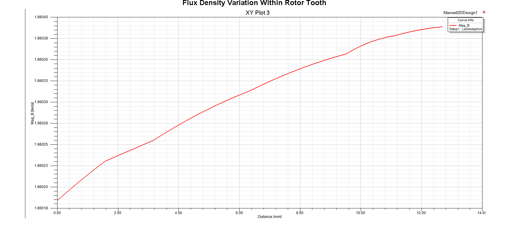 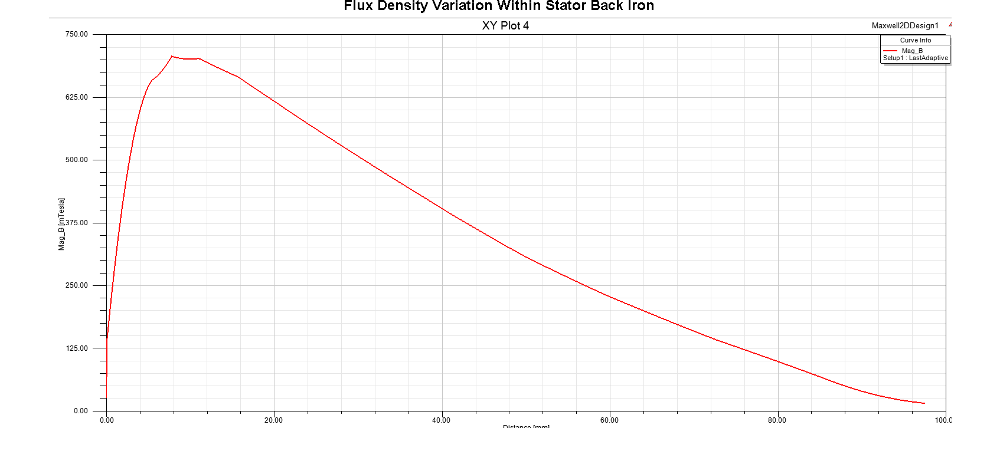 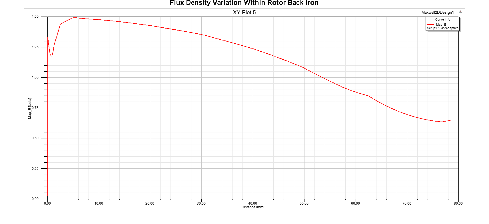 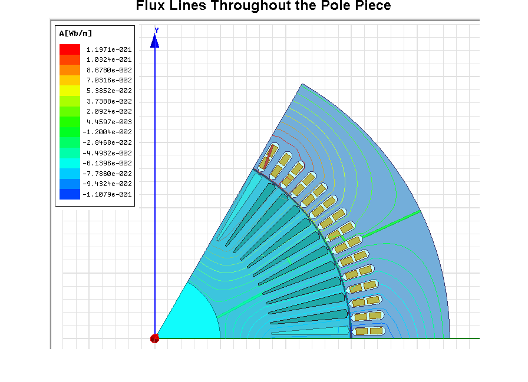 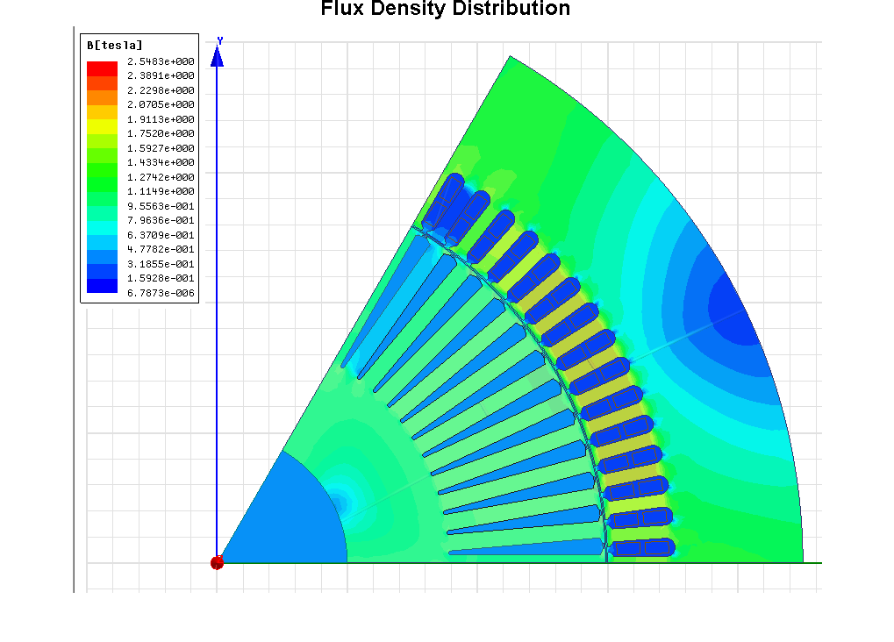
 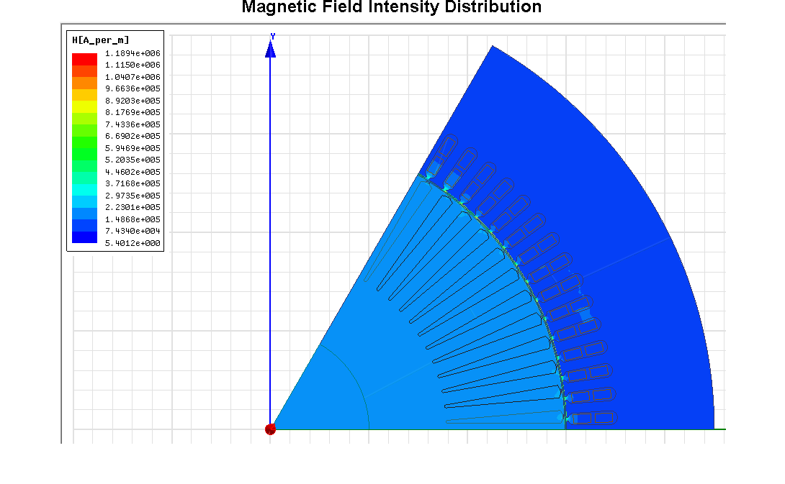 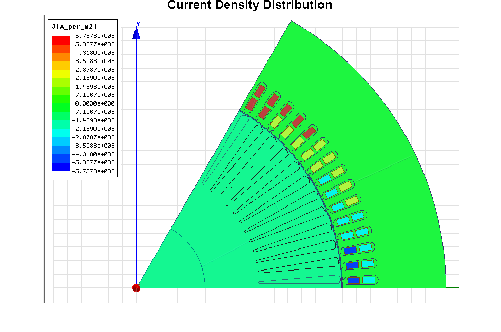  
    MAXWELL 2D MAGNETOSTATIC SOLUTION-2
I = imread('airgapBrect3.png'); figure; imshow(I); title('Flux Density Variation Within the Air Gap','FontSize',18,'FontWeight','Bold'); I = imread('toothsBrect3.png'); figure; imshow(I); title('Flux Density Variation Within Stator Tooth','FontSize',18,'FontWeight','Bold'); I = imread('toothrBrect3.png'); figure; imshow(I); title('Flux Density Variation Within Rotor Tooth','FontSize',18,'FontWeight','Bold'); I = imread('yokesBrect3.png'); figure; imshow(I); title('Flux Density Variation Within Stator Back Iron','FontSize',18,'FontWeight','Bold'); I = imread('yokerBrect3.png'); figure; imshow(I); title('Flux Density Variation Within Rotor Back Iron','FontSize',18,'FontWeight','Bold'); I = imread('flux_lines3.png'); figure; imshow(I); title('Flux Lines Throughout the Pole Piece','FontSize',18,'FontWeight','Bold'); I = imread('flux_density3.png'); figure; imshow(I); title('Flux Density Distribution','FontSize',18,'FontWeight','Bold'); I = imread('flux_density23.png'); figure; imshow(I); title('Flux Density Near Air Gap and Teeth','FontSize',18,'FontWeight','Bold'); I = imread('current_density3.png'); figure; imshow(I); title('Current Density Distribution','FontSize',18,'FontWeight','Bold');

MAXWELL 2D MAGNETOSTATIC SOLUTION-3
I = imread('airgapBrect2.png'); figure; imshow(I); title('Flux Density Variation Within the Air Gap','FontSize',18,'FontWeight','Bold'); I = imread('toothsBrect2.png'); figure; imshow(I); title('Flux Density Variation Within Stator Tooth','FontSize',18,'FontWeight','Bold'); I = imread('toothrBrect2.png'); figure; imshow(I); title('Flux Density Variation Within Rotor Tooth','FontSize',18,'FontWeight','Bold'); I = imread('yokesBrect2.png'); figure; imshow(I); title('Flux Density Variation Within Stator Back Iron','FontSize',18,'FontWeight','Bold'); I = imread('yokerBrect2.png'); figure; imshow(I); title('Flux Density Variation Within Rotor Back Iron','FontSize',18,'FontWeight','Bold'); I = imread('flux_lines2.png'); figure; imshow(I); title('Flux Lines Throughout the Pole Piece','FontSize',18,'FontWeight','Bold'); I = imread('flux_density2.png'); figure; imshow(I); title('Flux Density Distribution','FontSize',18,'FontWeight','Bold'); I = imread('flux_density22.png'); figure; imshow(I); title('Flux Density Near Air Gap and Teeth','FontSize',18,'FontWeight','Bold'); I = imread('current_density2.png'); figure; imshow(I); title('Current Density Distribution','FontSize',18,'FontWeight','Bold');
EVALUATION OF THE DESIGN THROUGH MAXWELL 2D FEMM RESULTS
Flux density values and distribution at various instants in the air gap is as expected. The slot harmonics can be observed transparently in the air gap flux density. The peak of fundfamental ait gap flux deisty is as desired.
Flux density values and distribution at various instants in both stator and rotor yoke is as expected. There is no risk of saturation at steady state. The stator yoke flux density is lower than the usually selected values (around 2/3 times). This actually may mean that the magnetic loading is lower than its limitations such that the electrical loading is higher for a given power. The stator back core flux density can be incrased by decreasing the outer diameter of stator.
Flux density values and distribution at various instants in stator teeth is slightly higher than the designed value and flux density in rotor teeth is close to rated value. There is actually a small risk of local saturation at steady state in stator teeth. A safety marging may be added to those parts if the design is to be revisited.
All other variations obtained from the 2D simulations are as expected (flux lines, current density etc.)